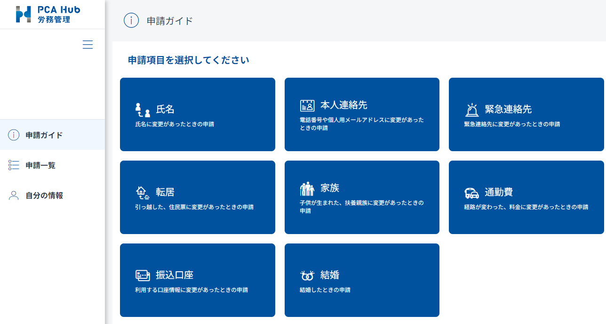
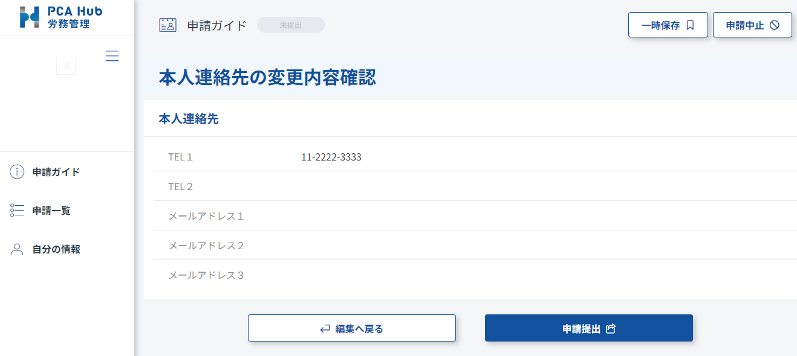
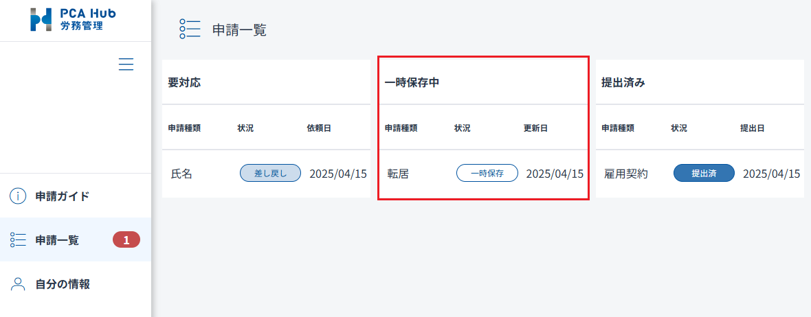
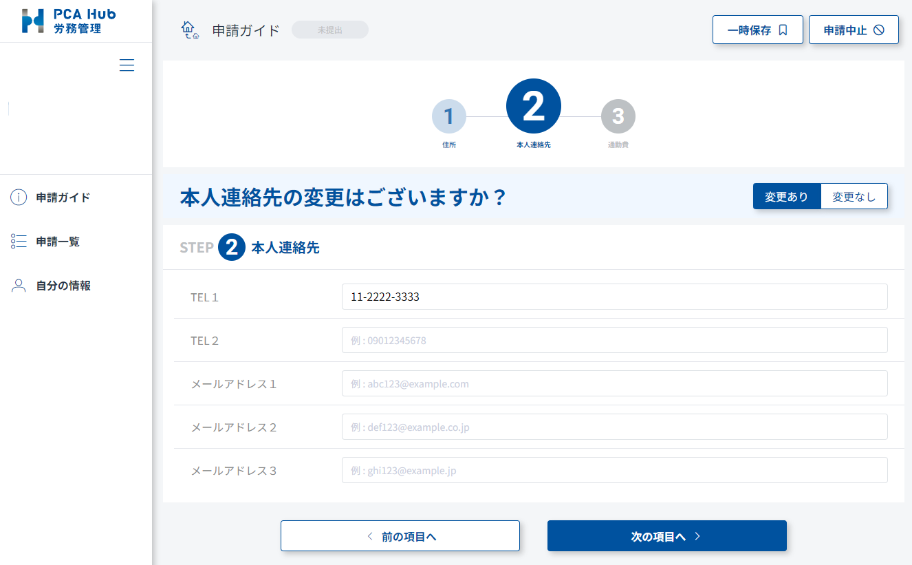
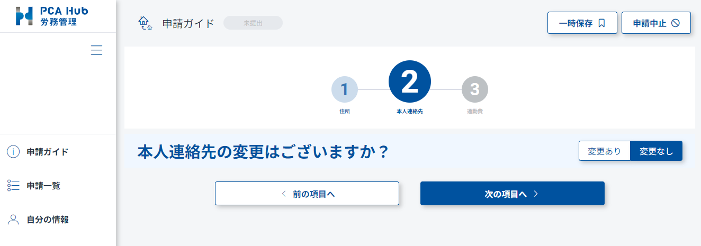

変更を申請する
住所、家族情報など、自分の情報を労務管理者に対して申請することができます。
制限
-
PCA Hub 労務管理のライセンスを付与されている必要があります。
-
PCA Hub 労務管理に社員情報が登録されている必要があります。
申請内容を入力・提出する
転居などに伴って自分の情報に変更があった場合、労務管理者へ申請を行います。
(1) PCA Hub 労務管理のクライアントサイトにアクセスします。
(2) 「申請ガイド」ページにて、該当する申請をクリックします。

(3) 申請の入力画面が表示されるので、申請内容を入力します。

(4) 「申請内容確認」をクリックして内容を確認して、「申請提出」をクリックして申請を提出します。

ポイント
-
入力した内容は下書きとして一時保存することができます。 一時保存中の申請は「申請一覧」ページに表示され、クリックすると入力を再開できます。

-
一時保存中の申請を含み。同一の申請は複数提出することはできません。 提出済みの申請が承認される、または申請を中止すれば提出出来るようになります。
-
「転居」「結婚」の申請は、複数の情報をまとめて申請することができます。
変更のないものは省略して申請できます。
